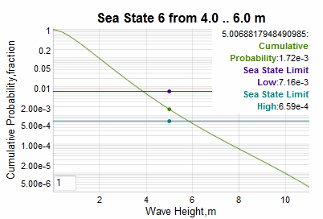

Sea-state model for various coastal and inland bodies of water.
The sea-states follow a scaling system starting at 0 for calm water.
The wave elevation cumulative distribution function (CDF) maps to the sea-state for a given region, such that lower sea-state values are more common for smaller and shallower bodies of water.

In the example chart above, the cumulative probabilities for a sea-state of index 6 is shown. The lower cumulative is given by the purple line and the upper (rarer) cumulative given by the high-end sea-state value is the bluish-green line. These number limits depend on the specific historical data culled from the selected aquatic region.